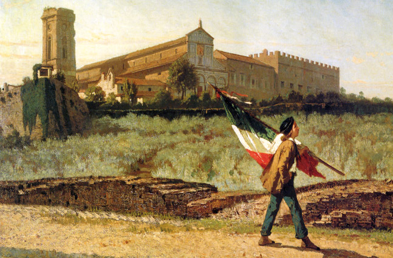

Revolutions of 1848
Causes:
- poor harvests=food shortages
- the government had a small amount of money
- businesses failed
- small pay=bad living conditions
- small amount of jobs
- middle class was dominant with uncontrolled economies
- nationalism
What Happened?
Riots occured in Sicily, Naples, Milan, Venice, Piedmont,
and Rome, but failed because the riots were random and
lost enthusiasm, landowners easily took control of
movements, the middle class started to fear radicalism,
and divisions of national groups in Eastern Europe.
What Was Learned?
L - Leadership:push for unification needs to be accepted
U - Unity: cooperation between all Italian states
C - Common Aim: compromise is need
I - Internation: revolution needs help from other countries
A - Austria: Austrian control must be defeated
The Road to Unification:
1859- Felice Orsini send letters to Napoleon III
begging him to help Italy. Napoleon III responded
positively and ended up signing the Treaty Of Plombieres
with Count Camillo Cavour that promises French intervention if
Austria attacks Piedmont.
April 1859- The Second Italian War starts when Austria
attacks Piedmont and France helps Piedmont. Austria is
later defeated at the Battle of Solferino and Piedmont
gains Lombardy.

November 1859- France signed the Treaty of Villafranca
with Austria declaring peace between the two countries
and France recieves Nice and Savoy(they will only have
them for a short period of time).
March 1860-Citizens of Tuscany and Romanga regions
along with cities of Parma, Modena, and Bologna voted
for union with Piedmont.
1861- Garibaldi and 1,000 Piedmontese soilders (also
called the Red Shirts because they wore red shirts) took
over all of southern Italy with force and added them to the
colonies of Germany.
February 18, 1861 - Victor Emmanuel is cowned the King
of Italy (now only Rome and Venetia are the only
countries left to complete the Italian Unification!).
1866- Italy joins Prussia in war against Austria. Even
though Austria beat Italy, Austria's defeat infront of
Prussia caused Austria to give Venetia to Italy.
September 1870- Italy invades Rome when French soilders retreated back to France after being defeated by Prussia.